The rapid progress of generative art has democratized the creation of visually pleasing imagery. However, achieving genuine artistic impact – the kind that resonates with viewers on a deeper, more meaningful level – requires a sophisticated aesthetic sensibility. This sensibility involves a multi-faceted reasoning process extending beyond mere visual appeal, which is often overlooked by current computational models. This paper pioneers an approach to capture this complex process by investigating how the reasoning capabilities of Multimodal LLMs (MLLMs) can be effectively elicited for aesthetic judgment. Our analysis reveals a critical challenge: MLLMs exhibit a tendency towards hallucinations during aesthetic reasoning, characterized by subjective opinions and unsubstantiated artistic interpretations. We further demonstrate that these limitations can be overcome by employing an evidence-based, objective reasoning process, as substantiated by our proposed baseline, ArtCoT. MLLMs prompted by this principle produce multi-faceted and in-depth aesthetic reasoning that aligns significantly better with human judgment. These findings have direct applications in areas such as AI art tutoring and as reward models for generative art. Ultimately, our work paves the way for AI systems that can truly understand, appreciate, and generate artworks that align with the sensible human aesthetic standard.
Human aesthetic perception is a multifaceted decision-making process that extends beyond mere visual appeal. It encompasses factors including, but not limited to, originality, cultural background, emotional resonance, and visual narrative, all of which contribute to the unique aesthetic value of artworks (Gombrich and Gombrich 1995; Kant 2024; Hume 1757; Joshi et al. 2011). The importance of understanding this complex process is widely acknowledged by art practitioners and scholars, as it not only deepens our theoretical understanding of beauty but also informs and inspires art creation (Gombrich and Gombrich 1995; Sibley 2017). In the era of rapidly advancing generative arts, an algorithmic understanding of aesthetics is also crucial to producing truly unique and impactful artistic representations (Samo and Highhouse 2023; Bo et al. 2018; Guo et al. 2025b; Chamberlain et al. 2018).
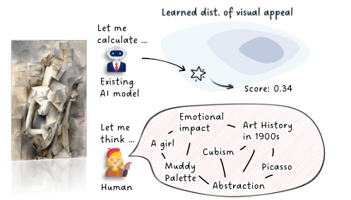
Despite its complexity and importance, a majority of existing computational approaches have oversimplified the concept of aesthetics. They predominantly employ end-to-end learning to obtain black-box models that predict a score. Specifically, systems like traditional Image Quality Assessment (IQA) (Zhu et al. 2024; Wang et al. 2023), AI-Generated IQA (AGIQA) (Yang et al. 2024), and more recent human preference models (e.g., PickScore (Kirstain et al. 2023), VisionPrefer (Wu et al. 2024)) follow this limited paradigm—regressing human preference based on visual feature maps, without engaging with the complex cognitive processes underlying aesthetic judgment. While these scoring models may be effective in assessing image quality in certain cases, they provide no insights and interpretation for their prediction. More importantly, the measurement of quality or visual appeal is a fundamentally superficial understanding (i.e., a kistch) of aesthetics (Sibley 2017; Kant 2024; Schelling et al. 2008; Gombrich and Gombrich 1995; Hume 1757; Isik and Vessel 2021), and this limited view can lead to misalignment with human aesthetic perception in practice (So 2023; Ioannou and Maddock 2024; Barnet 2015; Chen et al. 2024; Ortlieb and Carbon 2019; Samo and Highhouse 2023; Black et al. 2023). For instance, impactful paintings that are not immediately visually pleasing but involve more in-depth artistic expression may be mis-classified by these models. Therefore, modeling and mimicking the multifaceted cognitive process in human aesthetic judgment is essential to build a truly human-aligned aesthetic evaluator, as illustrated in Fig. 1.
In seeking to capture the ineffable nature of human aesthetic perception, we draw broad inspiration from art and philosophy. In particular, the practice of “formal analysis” (Barnet 2015; Kim et al. 2022; Van Leeuwen and Jewitt 2000) in art criticism offers valuable insights to formulate our goal. It is a structured approach where critics methodically describe their observations in terms of visual elements, critically interpret compositional choices, and connect these observations to broader aesthetic principles for objective aesthetic judgment. This analysis does not merely catalog visual features; it actively weaves perception, emotion, cultural context, and artistic knowledge into a coherent evaluative narrative. This multifaceted narrative connects observation and interpretation, mapping the cognitive activity of our art experience into words, a holistic capability that bears a striking resemblance to the inference-time reasoning paradigm of recent multimodal large language models (MLLMs) (OpenAI 2023; Team et al. 2023; Anthropic [n. d.]; Wei et al. 2022). This parallel presents an opportunity to address the long-standing challenge of modeling human aesthetic judgment, inspiring our central research question:
Can reasoning facilitate MLLMs perform human-aligned aesthetic judgments in zero-shot?
Answering this question requires understanding both human aesthetic judgment and how reasoning can be effectively performed in MLLMs. For the human aspect, this paper proposes a rank-based human aesthetic perception model, designed to suppress inter-person subjectivity through philosophy-inspired principles (Tatarkiewicz 1963; Kant 2024; Tatarkiewicz 2012). Human expert judgment is collected on a newly proposed dataset, FineArtBench, with large-scale and semantically labeled styles to facilitate statistically unbiased correlation studies. We leverage chain-of-thought (CoT) prompting to enable the reasoning of MLLMs. The reasoning traces are tracked to facilitate judgment and perform quantitative correlation analysis with human decisions.
By experimenting with different prompting techniques across MLLMs, we identify a key challenge in applying them for artistic evaluation: hallucination. Specifically, we observe a high tendency for MLLMs to reason subjectively with unsubstantiated artistic interpretations. Our analysis further underscores that the bottleneck lies in the reasoning process itself, rather than in the base model. We argue that evidence-based and objective reasoning is essential to suppress these hallucinations. With these valuable insights, we demonstrate that a simple baseline, ArtCoT, can produce exceptionally in-depth and multifaceted aesthetic reasoning. Judgments conditioned with such objective and critical reasoning demonstrate a substantial improvement in correlation with human decision. It also significantly outperforms existing IQA and preference models. Overall, our findings not only envision future directions for aesthetic reasoning but also have direct applications in human-computer interaction (HCI) and generative art, such as AI art tutors (Ghose 2017; Xu 2024) and reinforcement learning from AI feedback (RLAIF)-enhanced art generation (Black et al. 2023; Clark et al. 2023; Guo et al. 2025b; Wu et al. 2024).
We summarize our contributions as follows:
We introduce the task of aesthetic reasoning.
We propose a philosophy-inspired principled approach for objectively modeling human aesthetic judgment.
We introduce FineArtBench, the first large-scale semantically annotated dataset for broad tasks related to art.
Our analysis provides valuable insights into the hallucination bottleneck of MLLMs in aesthetic reasoning.
Our baseline ArtCoT points out a promising way for human-aligned aesthetic reasoning in zero-shot.
Generative art is nothing special but a new medium for artistic expression. Neural style transfer (NST) (Deng et al. 2022; Huang and Belongie 2017; Gatys et al. 2016; An et al. 2021; Jiang and Chen 2024) and image generation methods (Elgammal et al. 2017; Rombach et al. 2022) are two central techniques in this field. Initially, research focused primarily on fidelity challenges, and the goal was to distill the distribution of real artworks, utilizing feature-level metrics such as Gram Loss (Gatys et al. 2016) and FID (Heusel et al. 2017; Wright and Ommer 2022) to quantify the alignment between generated and real artworks. More recently, the focus has shifted towards the affective challenge (Samo and Highhouse 2023; Li et al. 2024; Wu et al. 2024; Hullman et al. 2023): ensuring that the generated results are not only accurate but also visually pleasing. Preference models, such as PickScore (Kirstain et al. 2023) and HPS (Wu et al. 2023), are employed to address this aspect. With the rapid scaling of generative models, the acquisition of artistic images has become democratized. This progression allows us to pursue the ultimate challenge of art: striving for artistically meaningful and impactful artworks rather than mere visual appeal. This tri-stage progression was articulated at least 300 years ago by philosophers such as Hegel (Hegel and Hegel 1998). It is contextualized by the transition in art history from technical execution to artistic expression (Gombrich and Gombrich 1995). Just as aesthetics played a central role in that transition, an algorithmic understanding of aesthetics is key to advancing generative art. In this paper, we present a comprehensive study to this critical issue.
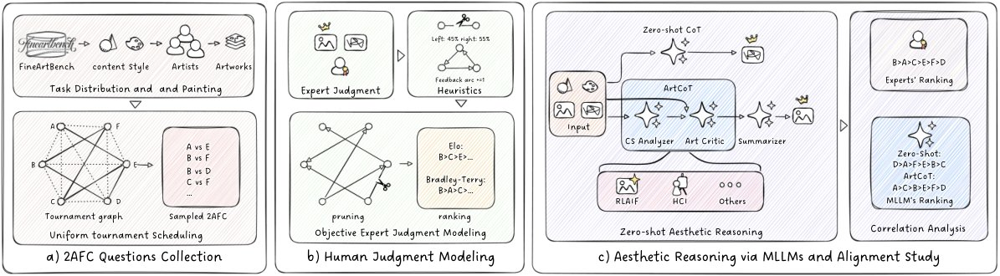
Early aesthetic evaluation algorithms were primarily rule-based, assessing the visual quality of paintings or photos using different principles (Bo et al. 2018; Gips and Stiny 1975). While simple and interpretable, these principles lack the generality to explain all cases. With the development of deep learning, data-driven methods (Schuhmann et al. 2022; Hentschel et al. 2022) have emerged, attempting to directly learn aesthetic evaluators from image collections labeled with human preferences. In parallel to these explorations, a highly related line of works is the development of quantitative metrics for NST. ArtFID (Wright and Ommer 2022) and Art Score (Chen et al. 2024) are two notable examples of this trend. Despite their different focus, they share the same underlying design philosophy: measuring the distance between input and human-preferred images within the vision feature space. This black-box inference, however, oversimplifies the complex aesthetic judgment process and is often misaligned with human perception (So 2023; Ioannou and Maddock 2024; Barnet 2015; Black et al. 2023). Recent methods (Zhang et al. 2023a; Huang et al. 2024a; Ke et al. 2023) attempt to incorporate MLLMs for more interpretable aesthetic perception. Nevertheless, most of these approaches require costly instruction-tuning and still focus on characterizing the visual appeal. This paper demonstrates that reasoning can make general-purpose MLLMs human-aligned aesthetic reasoners in zero-shot.
CoT prompting (Wei et al. 2022; Kojima et al. 2022; Hao et al. 2024) is a simple yet powerful technique for both LLMs and MLLMs. It functions by enabling the model to “think aloud,” generating a trace of its reasoning process before arriving at a final answer. CoT has proven effective for a variety of tasks that benefit from enhanced logical reasoning (Mitra et al. 2024; Sprague et al. 2024). Despite this progress, CoT is also susceptible to hallucinations, where the generated reasoning trace can be misleading (Lindsey et al. 2025; Huang et al. 2025). This paper investigates the application of CoT to aesthetics evaluation, a domain that extends beyond strict logical reasoning. Our analysis reveals an inherent and special hallucination issue when CoT is applied to this task, and the proposed method overcomes challenge.
Motivation. Despite the subjective nature of aesthetic taste, philosophers (Hume 1757; Tatarkiewicz 2012; Kant 2024; Tatarkiewicz 1963; Sircello 1968) and psychologists (Lindell and Mueller 2011; Palmer et al. 2013) generally acknowledge a degree of consensus regarding aesthetic judgments exists across cultures and historical periods, suggesting the possibility of objective comparative evaluation. This consensus, however, is not absolute. Comparing vastly different artworks, such as “Mona Lisa” and “Guernica” highlights the challenge of objective judgment without resorting to personal preference due to divergent content and style. In contrast, a controlled scenario, such as an art lesson where students draw porcelain vases using the cross-hatching technique, offers a more robust basis for objective aesthetics comparison. This approach aligns with established practices in art criticism and art education (Groenendijk et al. 2020; Andrade et al. 2014). With these observations, we explore aesthetic judgment within comparable contextual and stylistic frameworks for objective comparison.
Objective. From a computational perspective, we aim to derive a statistically robust global ranking of a set of artists (or art generators) or artworks (or generated art) from human feedback. Formally, let , , and denote the sets of all content, styles, and artists, respectively (within the studied scope). Each combination constitutes a task presented to the artists. The resulting artworks from artists , denoted as , form the set of candidates for this task: . We model human aesthetic judgment as a partial ordering on the set :
| (1) |
where maps the candidate index to its global rank, and means is judged to be superior than . We measure the alignment as the correlation between the ranks constructed from human experts and the MLLM(s), and we are interested in studying the effectiveness and potential challenges of reasoning in enhancing this alignment.
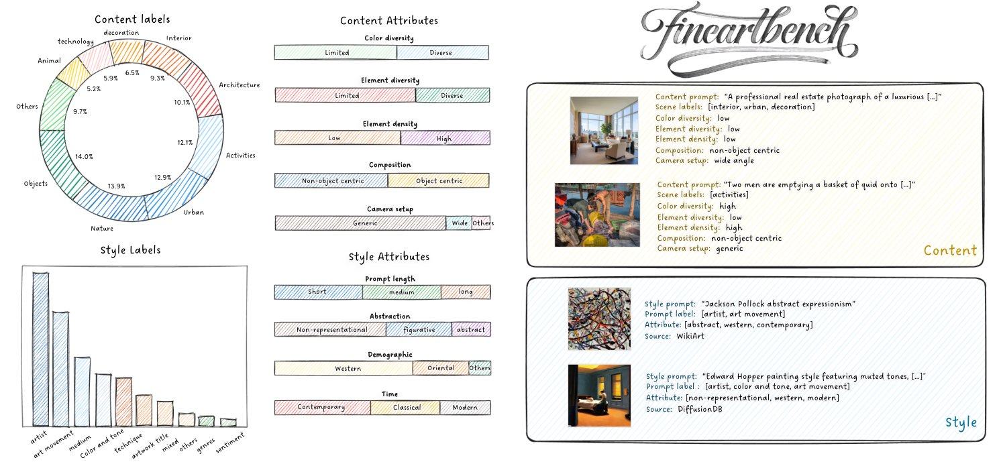
Judgment Collection. Directly deriving the partial ordering as in Eq. 1 requires an exhaustive comparison, which can be cognitively demanding and impair human decision-making. Inspired by findings in psychometrics and HCI (Sullivan and Artino Jr 2013; So 2023), we instead employ a two-alternative forced choice (2AFC) task for more efficient decision collection. Specifically, we present users with the task specification , along with two candidate artworks . Users are required to judge the relatively superior artwork without the option to indicate a tie or skip the comparison. We model the (judged) aesthetic superiority relationship probabilistically:
| (2) |
where represents the latent competence of , conditioned on the task of .
Sampling Strategies for 2AFC. Given the combinatorial complexity of ( in our case), exhaustive pairwise comparisons is infeasible. Therefore, we generate 2AFC comparisons by sampling, which reduce to a classical tournament scheduling problem. For a specific candidate set , all possible comparisons can be modeled as complete graph , where the node is the set of candidate results and stand for pair-wise comparison. We consider two strategies for sampling , corresponding to two real-world scenarios:
Global sampling: Uniformly sample arbitrary number of edges without replacement. This approach is suitable for covering a wider range of content and style to facilitate the ranking of artists.
Per-task sampling: Sample edges such that the sub-graph is connective with maximum node degree uniformness, meaning that each candidates shall be compared with for similar times. This is suitable for determining the ranks within specific task.
We design a novel greedy algorithm (described in Appendix. A.2) to efficiently achieve the requirements of per-task sampling.
Dealing with Subjectivity in Human judgment. Due to the inherent subjectivity of aesthetic perception, human judgment can vary even within the constrained scenario. This variation can arise from inherent annotation noise and is particularly prevalent when the artists perform equally good or bad. While addressing these challenging edge cases could be valuable, in this paper, given that this is an initial exploration of aesthetic reasoning, we focus on modeling the universality of aesthetics (Kant 2024; Tatarkiewicz 1963; Sircello 1968) with suppressed inter-personal subjectivity. This allows us to create an unbiased testbed for evaluation. To this end, we employ the following two heuristics to mitigate subjectivity during annotation collection:
2AFC disagreement: We exclude the 2AFC questions where judgments tie ().
Non-transitive relationship: To deal with non-transitive judgment, such as , we apply a feedback arc set (FAS) algorithm (Younger 1963) to detect feedback arcs and drop the whole task when .
Global Rank Derivation. We utilize Bradley-Terry (BT) model (Bradley and Terry 1952) and Elo (Elo and Sloan 1978) algorithm. In the BT model, , where the latent parameter is optimized with maximum likelihood estimation (MLE). The Elo algorithm utilize , where is the rating of candidate-i that is updated on-line. The rank within a task is the sorted by the competence of each candidate result, and we leverage the averaged competence among all tasks as the competence of an artist.
| Model | Reasoning | Per-Artist Alignment | Per-Task Alignment | ||||||
|---|---|---|---|---|---|---|---|---|---|
| Elo | Bradley-Terry | Elo | Bradley-Terry | ||||||
| -value | -value | -value | -value | ||||||
| Random guess | – | 0.061 | 0.896 | 0.059 | 0.855 | 0.068 | 0.153 | 0.026 | 0.290 |
| CLIP-IQA(Wang et al. 2023) | – | 0.366 | 0.038 | 0.321 | 0.091 | 0.324 | 0.004 | 0.314 | 0.002 |
| Compare2Score (Zhu et al. 2024) | – | 0.091 | 0.940 | 0.085 | 0.950 | 0.178 | 0.042 | 0.173 | 0.119 |
| CLIP Score (Radford et al. 2021) | – | -0.024 | 0.945 | 0.030 | 0.951 | -0.333 | 0.347 | 0.006 | 0.987 |
| PickScore (Kirstain et al. 2023) | – | 0.275 | 0.192 | 0.329 | 0.063 | 0.193 | 0.201 | 0.001 | |
| HPSv2 (Wu et al. 2023) | – | 0.343 | 0.074 | 0.352 | 0.056 | 0.321 | 0.285 | 0.007 | |
| Aesthetics Predictor (Schuhmann et al. 2022) | – | 0.424 | 0.016 | 0.456 | 0.008 | 0.385 | 0.404 | ||
| GPT-4o | Base | 0.395 | 0.084 | 0.432 | 0.023 | 0.328 | 0.003 | 0.331 | 0.006 |
| Claude 3.5-sonnet | Base | 0.341 | 0.032 | 0.217 | 0.236 | 0.312 | 0.367 | ||
| Gemini 1.5-flash | Base | 0.496 | 0.003 | 0.513 | 0.001 | 0.479 | 0.353 | ||
| GPT-4o | Zero-shot CoT | 0.415 +3% | 0.034 | 0.487 +10% | 0.015 | 0.299 -4% | 0.097 | 0.313 -3% | 0.031 |
| Claude 3.5-sonnet | Zero-shot CoT | 0.293 -7% | 0.177 | 0.264 +6% | 0.174 | 0.108 -30% | 0.068 | 0.081 -45% | 0.082 |
| Gemini 1.5-flash | Zero-shot CoT | 0.206 -58% | 0.292 | 0.272 -50% | 0.142 | 0.376 -20% | 0.327 -4% | ||
| GPT-4o | ArtCoT | 0.630 +39% | 0.003 | 0.721 +51% | 0.001 | 0.591 +39% | 0.548 +32% | ||
| Claude 3.5-sonnet | ArtCoT | 0.598 +39% | 0.009 | 0.546 +42% | 0.016 | 0.492 +26% | 0.487 +19% | ||
| Gemini 1.5-flash | ArtCoT | 0.705 +41% | 0.741 +47% | 0.624 +28% | 0.577 +35% | ||||
| Claude-3.7-sonnet-thinking | (Built-in) | 0.285 | 0.225 | 0.154 | 0.481 | 0.171 | 0.014 | 0.175 | 0.009 |
| Gemini-2.0-flash-thinking | (Built-in) | 0.204 | 0.262 | 0.254 | 0.191 | 0.157 | 0.004 | 0.245 | 0.003 |
Recent inference-time scaling paradigms, in particular the CoT prompting (Wei et al. 2022; Kojima et al. 2022) demonstrate impressive zero-shot task-solving capability. However, CoT is more widely studied for commonsense and logical reasoning. Applying CoT reasoning to the task of aesthetic-level art evaluation, which is not a direct logical task, presents significant challenges and may lead to diminished alignment with the human judgment (Sprague et al. 2024; Liu et al. 2024), as will be detailed in the Sec. 5.1. Specifically, a key issue is hallucination, where judgments are made prematurely, relying on subjective and superficial justifications. In other words, during aesthetics reasoning, MLLMs inherently exhibit a tendency to “feel” rather than to “reason”, and this hallucinated feeling often severely degrades the MLLM’s aesthetic judgment.
Motivated by the formal analysis in art criticism (Barnet 2015; Kim et al. 2022; Van Leeuwen and Jewitt 2000), our key insight is to explicitly ground the MLLMs’ decision-making with evidence and domain knowledge in art. Based on this principle, we propose a simple yet effective baseline, ArtCoT, which frames aesthetic perception as an evidence-based reasoning task.
ArtCoT features a two-hop reasoning process. In the initial stage, the MLLM acts as a CS Analyzer, providing a detailed and concrete description of the input task , as well as the paired 2AFC images . In the second phase, acting as an Art Critic, the MLLM is prompted to critically evaluate its previous observation and critically argue about the aesthetic quality. This analysis is linked to domain knowledge in art, encompassing a multifaced discussion that is not limited to stylistic features of , aesthetic principles, technical execution of the two candidates, and potential emotional impact. These two stages link observation, knowledge, and artistic value, mirroring the essence of formal analysis. Effectively, it establishes a rubric (Groenendijk et al. 2020; Andrade et al. 2014), translating the subjective perception of beauty into more well-defined sub-tasks that can be objectively reasoned with logical reasoning (Christensen and Ball 2016; Coleman 1966; Li et al. 2023).
During this structured CoT reasoning process, MLLMs perform a multi-faceted and in-depth aesthetic evaluation that mimics the deliberation of an art critic. (Note that our goal is to capture such reasoning trace, not simply the 2AFC result.) This reasoning trace can benefit a wide range of downstream applications. In this paper, we aim to assess the correlation with human judgment during 2AFC. Therefore, we further employ a summarizer that takes the reasoning trace as input and outputs a binary answer indicating the winner. The overall workflow is visualized in Fig. 2.
The collection of content and style (i.e., ) is most widely studied in NST literature (Jiang and Chen 2024; Huang et al. 2024b; Deng et al. 2022). However, these papers mainly rely on ad-hoc sampling from datasets such as MS-COCO (Lin et al. 2014) and WikiART (Wikiart [n. d.]). The limitation of this approach is at least in two folds: (1) limited in size and diversity, which cannot cover the wide range of art styles in real-world scenarios. (2) Limited semantic annotation, as most of the existing datasets do not provide semantic-level labeling of style and content, which impedes a fine-grained understanding of the methods’ strengths and weaknesses.
To circumvent these challenges, we propose FineArtBench, a dataset for generative art with unprecedented scale, diversity and quality. First, FineArtBench contains 1,000, and 1,000 densely annotated content and styles, respectively. The data is harvested from diverse sources (Kirillov et al. 2023; Lin et al. 2014; Wikiart [n. d.]; Wang et al. 2022), and further diversified using MLLMs, enabling comprehensive comparison for downstream tasks related to art. Moreover, we provide both content and style in two modalities (text and image), further expanding its versatility. Second, we perform a semi-automated annotation process (detailed in Appendix. A.3) where both content and style are annotated from diverse perspectives, such as scene in content (e.g., nature, portrait) and abstractness of style (e.g., figurative, abstract). These annotations enable a semantic-level understanding for downstream tasks. A comparison of FineArtBench with existing datasets is presented in Tab. 2, and an overview is given in Fig. 3.
| Dataset/Protocol | # Content | # Style | Multimodal | Semantic Labeling |
|---|---|---|---|---|
| StyleID (Chung et al. 2024) | 20 | 40 | ✗ | ✗ |
| LAION-Aesthetics (Schuhmann et al. 2022) | - | 50 | ✗ | ✗ |
| ArtBench (Liao et al. 2022) | - | 10 | ✗ | ✗ |
| StyleBench (Gao et al. 2024) | 20 | 73 | ✓ | ✗ |
| AGIQA-3k (Gao et al. 2024) | 5 | ✓ | ✗ | |
| FineArtBench | 1000 | 1000 | ✓ | ✓ |
Stylization models. Considering the size of , it is infeasible to hire real human artists for scalable dataset collection: a single painting requires days of expertise. On the other hand, existing publicly-available artworks have limited style that only covers a small subset of . Even if we collect some paired paintings, the MLLMs are prone to memorization than reasoning. To this end, we primarily rely on neural style transfer (NST) models as our “artists.” We evaluated total of 10 NST models, all executed with the default configurations suggested by respective authors. The methods include AdaIN (Huang and Belongie 2017), ArtFlow (An et al. 2021), ControlNet (Zhang et al. 2023b), DDIM (Song et al. 2020), DiffArtist (Jiang and Chen 2024), DiffStyler (Huang et al. 2024b), InstantStyle (Wang et al. 2024), Instruct-pix2pix (Brooks et al. 2023), StyleID (Chung et al. 2024), and Sty-Tr2 (Deng et al. 2022). These stylization models encompass a wide range of architectures and exhibit varying degrees of artistic stylization capability. This diversity provides a robust testbed for evaluating the performance of MLLMs in art evaluation.
Alignment Metrics. Following (Jiang and Chen 2024; Chen et al. 2024; Zhang et al. 2023a), we use the spearman’s correlation coefficient (Spearman 1987) to quantify the alignment between judgment from experts and MLLMs. A spearman’s closer to 1 indicates a stronger positive linear correlation of ranking, which suggests better alignment. To ensure robustness, we calculate averaged from five random and independent splits for the global (per-artist) sampling scheme, while for per-task sampling, we correlate each independent task. Considering the size of independent test and typical values, we combine using Pearson’s and Fisher’s method for per-artist and per-task scenario, respectively, as suggested by (Heard and Rubin-Delanchy 2018). A lower value means stronger statistical significance.
Compared Methods As the first exploration on MLLMs for aesthetic reasoning, finding direct comparisons can be challenging. Therefore we broadly compare three groups of methods. (a), IQA methods: including CLIP-IQA (Wang et al. 2023) and Compare2Score (Zhu et al. 2024); (b) Text-image alignment and preference scores: CLIP Score (Radford et al. 2021), Aesthetic Predictor (Schuhmann et al. 2022), PickScore (Kirstain et al. 2023) and HPSv2 (Wu et al. 2023). Despite ArtScore (Chen et al. 2024) share the most similar objective with this paper, we exclude it due to the unavailability of code at the time this paper was written. We consider (3) Zero-shot MLLMs, where we use three mainstream MLLMs as base model, including GPT-4o (OpenAI 2023), Gemini 1.5 (Team et al. 2023), and Claude 3.5 (Anthropic [n. d.]). We apply different MLLM reasoning methods, including base (directly output the winner), zero-shot CoT and the proposed ArtCoT. We also consider recent reasoning MLLMs, including Claude-3.7-sonnet-reasoning and Gemini-2.0-flash-thinking. The experiment of all MLLMs are repeated thrice with default hyper-parameters to ensure robustness.
We recruit 18 human experts with general knowledge of fine art for annotation. We collected a total of 80,000 initial judgments. For per-task sampling, we sample for each task. We prune uncertain human feedback with , and remove non-transitive task with . As a result, 20.1% of the feedback is filtered out due to pairwise divergence, while the remaining 15.3% are removed due to a high non-transitivity. To quantify the inter-annotation agreement, we use McFadden’s (McFadden 1972) to assess the transitivity of global ranking constructed from BT and Elo, reported in Tab. 3. A is generally considered as a good fit, which implies the judgment are statistically consistent.
| Raw | + prune uncertain | + drop non-transitive | |
| 0.17 | 0.26 | 0.31 |
We compare the correlation and statistical significance of different MLLMs and prompts using two sampling strategies. The results in Tab. 1 demonstrate a substantial advantage of aesthetic reasoning for enhancing MLLMs’ ability to judge aesthetics, achieving average improvements of 44%, 30% in the per-artist and per-task setup, respectively. When compared with other specialized IQA or preference models, MLLMs prompted with ArtCoT demonstrate state-of-the-art alignment even without any targeted optimization. By contrast, we observe that zero-shot CoT adversely affects alignment, decreasing it by 16% and 18% on average. Overall, these results prove that (1) reasoning can indeed make MLLMs human-aligned aesthetic evaluators, and (2) conditioned on proper elicitation of their reasoning capability.
| Method | Avg. length | Response Subjectivity | Hallucination (Factuality) | Hallucination (Extrinsic) | |||
|---|---|---|---|---|---|---|---|
| TextBlob | Word frequency () | Visual | Textual | Opinionated | Interpretation | ||
| Thinking MLLM (*) | 578.71 | 0.44 | 11.41 | 0.21 | 0.15 | 0.44 | 0.49 |
| GPT, 0-shot | 71.73 | 0.44 | 17.34 | 0.31 | 0.17 | 0.45 | 0.33 |
| Claude, 0-shot | 223.51 | 0.44 | 20.15 | 0.27 | 0.22 | 0.58 | 0.48 |
| Gemini, 0-shot | 123.07 | 0.46 | 21.05 | 0.31 | 0.17 | 0.54 | 0.59 |
| GPT, ArtCoT | 384.45 | 0.30 -25% | 5.04 -14% | 0.29 -3% | 0.19 +2% | 0.32 -24% | 0.18 -22% |
| Claude, ArtCoT | 580.21 | 0.29 -26% | 6.15 -18% | 0.31 +5% | 0.13 -12% | 0.22 -85% | 0.31 -33% |
| Gemini, ArtCoT | 740.21 | 0.23 -43% | 6.51 -18% | 0.28 -4% | 0.19 +5% | 0.17 -80% | 0.22 -53% |
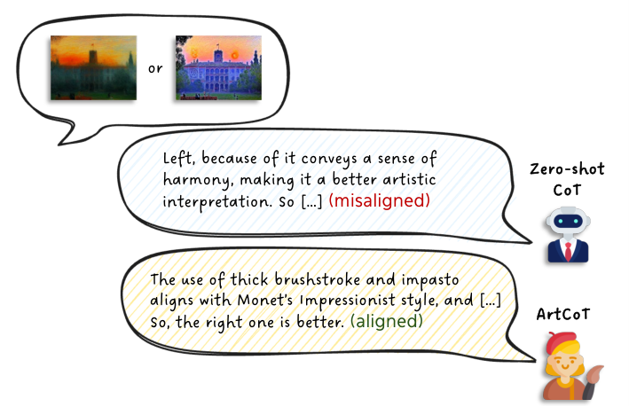
During aesthetic reasoning of artworks, MLLMs exhibit a bias towards subjective "feeling" rather than objective "reasoning." This tendency can significantly degrade an MLLM’s aesthetic judgment, leading to the counter-intuitive result where zero-shot CoT negatively impacts alignment with human perception. Our findings suggest that this issue stems from hallucination, particularly concerning the use of subjective language during the reasoning process.
Specifically, in the zero-shot CoT setting, we observe that MLLMs tend to arrive at rapid conclusions, employing subjective and less concrete language to justify their judgments. This hallucination is distinctive and can be broadly categorized into two types. The first is the use of opinionated and subjective words. For instance, opinion verbs (e.g., “feels”, “senses”) and hedge words (e.g., “appears”, “seemingly”) are frequently employed. These terms often indicate a lack of in-depth consideration, weak logical connection to the given task and are less supportive for aesthetic judgment (Sircello 1968). Furthermore, the MLLMs may generate ostensible “artistic interpretations” that are superficial and not substantiated with facts or explanations. These hallucinations are consistently observed across different MLLMs when prompted with zero-shot CoT, which is broadly in line with recent findings (Liu et al. 2024; Huang et al. 2025). Illustrative conversation examples are provided in Appendix B. Our analysis in the subsequent section further corroborates this observation.
Compared with the base prompting and zero-shot CoT, the thinking traces produced by ArtCoT are more concise, objective, and closely aligned with the input, as exemplified in Fig. 4. To quantify this improvement, we analyze the thinking traces in detail. Specifically, we first (1) measure the subjectivity of responses by calculating the frequency of subjective verbs in the lemmatized responses of MLLMs. We also follow established practices in natural language processing (NLP) by performing lexicon-based subjectivity analysis using the TextBlob package, which provides a score in the range of 0 to 1 (with a higher score indicating greater subjectivity).
Moreover, (2) during human annotation, we present the misaligned 2AFC questions to users for fine-grained hallucination labeling. Similarly, we categorize hallucinations into two types:
(a) Factual Errors, which include incorrect image recognition (visual) and inaccurate style explanations (textual) — often referred to as intrinsic hallucinations, as they can be directly deduced from the input; and
(b) Extrinsic Hallucinations, comprising opinionated responses and artistic interpretations. Users are tasked with reading the MLLM’s thinking trace and rating the severity of hallucinations on a scale of [0,1,2] for each of the four factors. We summarize the results for both experiments in Tab. 4.
The experiment results offer insights into the hallucination challenge faced by MLLMs. Firstly, human evaluation reveals that all models exhibit relatively less severe hallucinations in terms of visual and textual aspects. This suggests that factual inaccuracies are not the primary source of hallucinations in this context. Instead, the prevalent use of subjective language, characterized by opinionated expressions and unsubstantiated artistic interpretations, significantly impedes the ability of MLLMs to align their aesthetic judgments with those of humans. Moreover, the elevated response subjectivity observed in zero-shot CoT, as evidenced by the remarkably consistent TextBlob scores () and the frequency of subjective words, provides further support for this assertion.
In other words, this experiment reinforces our finding that the bottleneck for MLLMs in art evaluation does not reside in their recognition capabilities—as all models demonstrate a relatively clear comprehension of the input. Rather, the challenge lies in effectively eliciting their reasoning capability by mitigating the hallucinations stemming from subjective expressions. We have also shown that this challenge is surmountable, as an evidence-based and reflective reasoning approach like ArtCoT enables a substantial suppression of subjectivity and hallucination, bringing a significant improvement in human alignment.
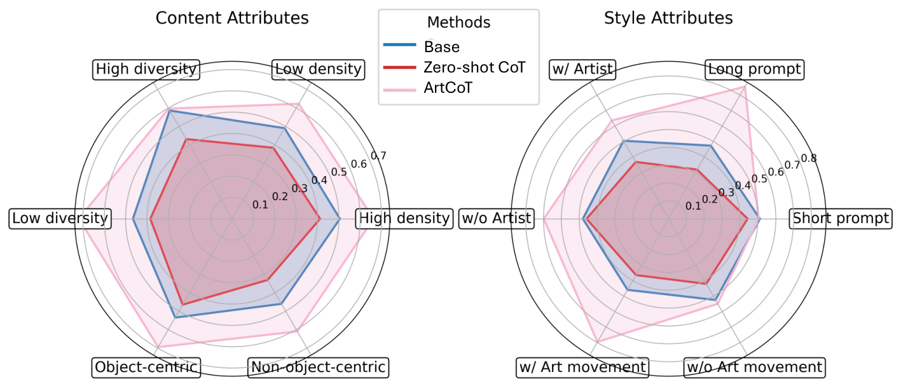
The semantic label in FineArtBench enables finegrained understanding of MLLM’s performance. For instance, in Fig. 5 , we visualize the alignment performance on different content image complexity and style prompt categories.
The proposed ArtCoT outperforms both base and zero-shot CoT prompting in all examined sub-classes, demonstrating its versatility. The most notable improvements are observed in tasks that with concrete style instructions. For example, we notice a significant improvement of “long prompt” and prompts specifying particular “art movement”. We posit that longer prompts and mentioning of art movement set a more concrete objective for both the art creation evaluation (Bai et al. 2024). Compared with obscure instructions, this specificity facilitates the MLLM to more objectively perform the two-hop reasoning, resulting in reduced hallucination and improved human alignment (Huang et al. 2025; Wei et al. 2022; Guo et al. 2025a; Bai et al. 2024).
Components of ArtCoT. We ablate the key components of ArtCoT, specifically the CS analyzer and the art critic, and report the results in Tab. 5. The complete ArtCoT prompt achieves the highest aesthetic alignment. Particularly, removing the art critic phase induces the most significant decline, underscoring its critical role. This provides further evidence that reasoning is the key bottleneck.
Input to MLLM. We ablate input modalities and image resolutions, with results reported in Tab. 6. The full resolution achieves the best result. This is because the details in artworks, such as strokes, are important factors of aesthetics. For input modalities, providing style information is important in per-artist alignment, while including the reference image affects per-instance alignment the most. For either setting, providing all input modalities achieves the best alignment, meaning that task-constrained 2AFC aids objective aesthetic reasoning and judgment to be human-aligned.
| CS-analyzer | Art Critic | Per-artist | Per-task |
|---|---|---|---|
| ✗ | ✓ | 0.630 | 0.532 |
| ✓ | ✗ | 0.531 | 0.366 |
| ✓ | ✓ | 0.739 | 0.607 |
| Content | Style | Resolution | Per-artist | Per-task |
|---|---|---|---|---|
| ✓ | ✓ | 1/2 | 0.630 -42% | 0.432 -44% |
| ✓ | ✓ | 1/4 | 0.502 -91% | 0.285 -82% |
| ✗ | ✗ | full | 0.476 -100% | 0.416 -49% |
| ✗ | ✓ | full | 0.678 -23% | 0.465 -36% |
| ✓ | ✗ | full | 0.557 -69% | 0.521 -22% |
| ✓ | ✓ | full | 0.739 | 0.607 |
We have demonstrated that evidence-based reasoning makes MLLMs human-aligned art evaluators. A lot of applications can benefit from this exploration, both in terms of RLAIF and HCI. Fig. 6 provides an illustration of how generative art may benefit from the reward signals with aesthetic reasoners to improve the generation, utilizing a pipeline akin to (Guo et al. 2025b). A similar pipeline may also be employed for human-centered and interactive art education.
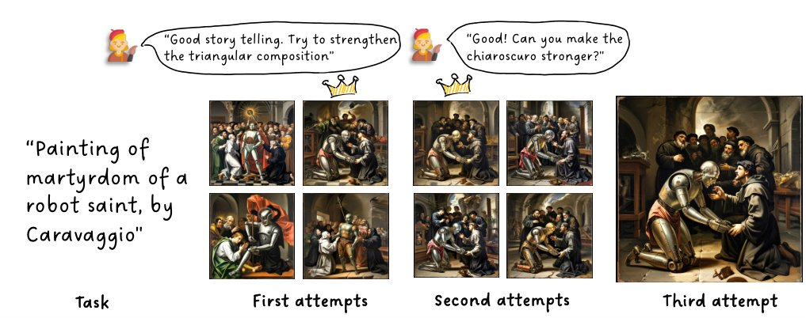
Aesthetics, as a subject studied for centuries, possesses complexities that cannot be fully addressed in a single paper. Numerous avenues for improvement exist, with the most significant challenge being the computational modeling of inter-person subjectivity. One possible technical direction involves conditioning Eq. 2 with the audience identity to enable personalized aesthetic models. A deeper understanding of the human part provides valuable insights, such as the philosophical theories and discussion on aesthetic judgment (Kant 2024; Sircello 1968; Hullman et al. 2023).
The concept of aesthetics has been largely simplified in existing algorithms. Without explicitly modeling the cognitive process underlying human aesthetic judgment, computational models can never truly align how humans perceive beauty and produce artistically impactful artworks. This paper pioneers this exploration by capturing such aesthetic reasoning process with MLLMs. Our experiments reveal a key bottleneck in applying MLLMs for aesthetic reasoning: the proper elicitation of reasoning capability during inference rather than relying solely on the base model. In-depth analysis further highlights the hallucination issues stemming from subjective opinions and unsubstantiated interpretations, leading to misaligned judgments. We further identify a promising solution through an evidence-based and objective reasoning process. These valuable findings can inspire future AI models to align with human aesthetic perception.
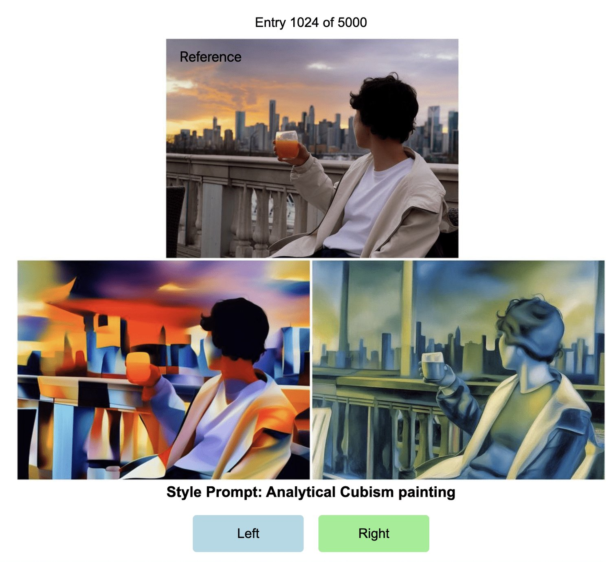
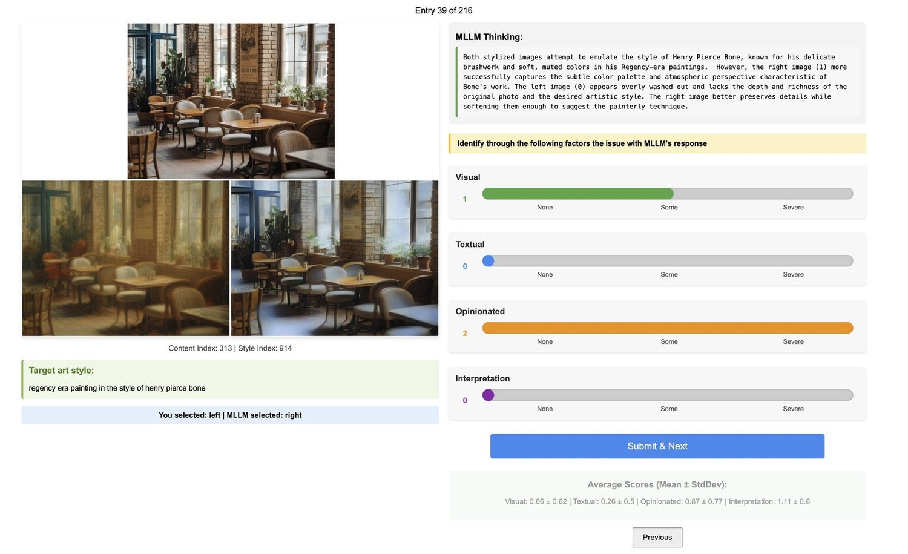
User Interface For the main judgment collection in Sec.3.2, we develop a web-based application to collect responses from human-expert annotators. We present users with the 2AFC question and reference content and style. The content is presented as a reference image, while we present the style as a prompt. The name of the stylization model is tracked but not visible to the user during annotation. The screenshot of the user interface (UI) can be found in Fig. 7.
For the hallucination labeling, we also designed a UI, visualized in Fig. 8. We record the user’s response during the 2AFC annotation and present them with the misaligned comparisons. The user shall read the MLLM’s response (the prompting method and the model name is not visible) and determine the hallucination issue from the four aspects. The image on left will be enlarged on mouse hover.
The annotation tools will be open-sourced to benefit future research.
Preference Collection The participants (n=18, 7 female, 11 male) all have at least a tertiary education background. All participants have basic knowledge about Western and oriental art history, 14 participants have at least basic experience in painting, while 7 participants have experience in generative art, either as creative media or research. All participants are at least 18 and consent to the potential naked human body present in the dataset. Participants are allowed to search when they encounter unfamiliar art styles. The average time spent (measured as the time the author stays on the annotation page) per 2AFC annotation comparison is 13.3 sec, and the hallucination annotation is 63.5 sec. The physical setup is visualized in Fig. 9
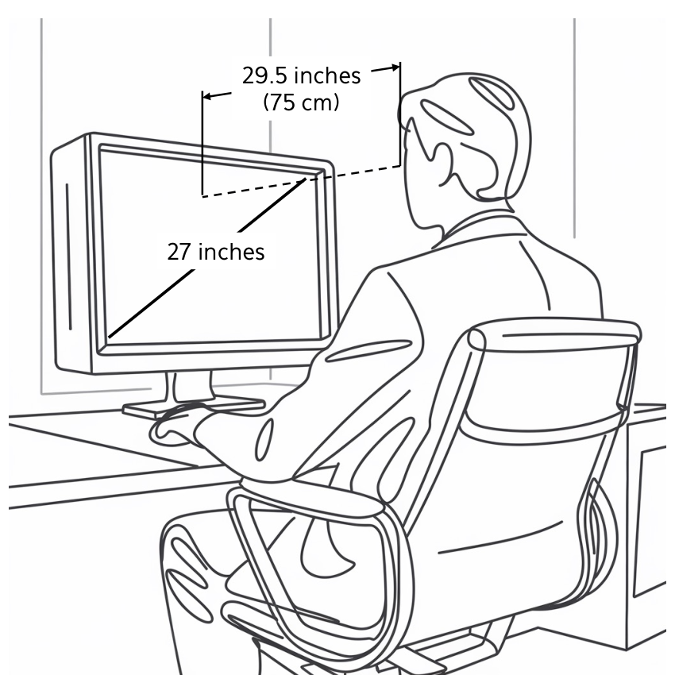
We formally describe the proposed degree-uniform sub-graph sampling algorithm in Algorithm below.
Input:
;
We construct FineArtBench by harvesting from existing open-source datasets with the help of MLLMs.
For the Content category, 50% of the content images are generated using the Ideogram-v1 text-to-image (T2I) diffusion model with diverse prompts produced by GPT-4. The remaining 50% are randomly sampled from the SA-1B (Kirillov et al. 2023) and MS-COCO (Lin et al. 2014) datasets, with captions generated by Gemini-v1.5 pro (Team et al. 2023). Images from SA-1B are downsampled by a factor of two, while those from MS-COCO retain their original resolution. Overall, all images have an average height and width of 895.7 and 811.9 pixels, respectively. The 5th percentiles for height and width are 480 and 427 pixels, respectively, and the 95th percentiles for both dimensions are 1248 pixels.
To synthesize fine-grained attribute annotations for the content images and their associated prompts, we first employ Gemini v1.5-pro to automate the annotation process based on a predefined attribute set. The Style subset of FineArtBench is derived from WikiArt (Wikiart [n. d.]) and DiffusionDB (Wang et al. 2022). The process involves two main steps:
WikiArt Processing: We extract keywords from WikiArt, focusing on specifications such as art movement, artist, and genre. These base keywords are then expanded and combined using GPT-4 (OpenAI 2023) to create a diverse set of style descriptors.
DiffusionDB Processing: Given the high noise level in DiffusionDB annotations, we utilize an MLLM to preprocess the text prompts within the dataset. Specifically, we extract the style descriptions from each prompt and merge those with similar style specifications. Subsequently, we subsample from these processed style prompts to ensure quality and diversity.
For both the WikiArt and DiffusionDB prompts, style reference images are generated using StableDiffusion-v2 (Rombach et al. 2022), with all images standardized to a resolution of 512512 pixels. Similar to content annotations, we employ MLLMs to annotate the attributes of style prompts.
All annotations are manually validated by at least two human annotators to ensure quality. The actual number of sampled content and style images is summarized in Table 7. We will open-source FineArtBench to facilitate reproducibility and support future research endeavors.
| Content | Style | ||||
| Source | Generated | MS-COCO | SA-1B | WikiArt | DiffusionDB |
| Number | 500 | 250 | 250 | 764 | 236 |
We summarize the full prompt of base prompt, zero-shot CoT prompting and the proposed ArtCoT prompt in Tab. 8. We did not attempt to optimize the prompt design of ArtCoT as it just act as a strong baseline method to identify the key issue and inspire future works.
| Base Prompt | Zero-Shot CoT | ArtCoT | ||
| CS Analyzer | Art Critic | Summarizer | ||
| ‘[IMAGE]‘ You are an expert in fine art. A source image (top) and two different stylized images (bottom) in the style of ‘[STYLE]‘ are presented to you. Consider both the content and style, which stylized image is better in terms of overall aesthetic quality as an artwork? Return your decision in a Python Dict, [’winner’:int]. ‘0‘ means the left is better while ‘1‘ means the right is better. Do not answer any other things. | ‘[IMAGE]‘ {"request": "You are an expert in fine art. A source image (top) and two different stylized images (bottom) in the style of ‘[STYLE]‘ are presented to you. Consider both the content preservation and style fidelity, which stylized image is better in terms of overall aesthetic quality as an artwork?". Return the reason and your decision in short in format of a Python Dict ’thinking’:str, ’winner’:int. ‘0‘ means the left is better while ‘1‘ means the right is better.", "response": "{’thinking’: ’ Let’s’ think step by step, | ‘[IMAGE]‘ You are an expert in fine art. A source image (top) Two stylized images (bottom left and bottom right) in the style of ‘[STYLE]‘ are presented to you. Compare the content preservation and style fidelity of the two images, which one is better. Return your answer in a Python Dict, [’style_reason’:str, ’content_reason’:str, ’style_winner’:int, ’content_winner’:int]. ‘0‘ means the left is better while ‘1‘ means the right is better. Do not include any other string in your response. | ‘[IMAGE]‘ Take a closer look at the two stylized images at the bottom in the style of ‘[STYLE]‘. As an expert in art, do you agree with above analysis? Compare and consider the following questions. What visual features is essential for the style of ‘[STYLE]‘? Is the content at top well-preserved in the specific art style? Is there any artifact, distortion or inharmonious color patterns in either painting? Return your answer in a Python Dict, [reflection’:str]. | ‘[IMAGE]‘ Now we summarize. Based on above analysis and reflection, which stylized image at the bottom is better in terms of overall aesthetic quality as an **painting of the original content (top) in another style**? Return your answer in a Python Dict, [’winner’:int]. ‘0‘ means the left is better while ‘1‘ means the right is better. Do not include any other string in your response. |
We present several quantitative comparisons of MLLM’s response generated using different prompt in the following pages. We highlight the subjective words and unsubstantiated interpretation of zero-shot CoT. Compared with zero-shot CoT, the responses from ArtCoT is much more detailed and contain less hallucination.
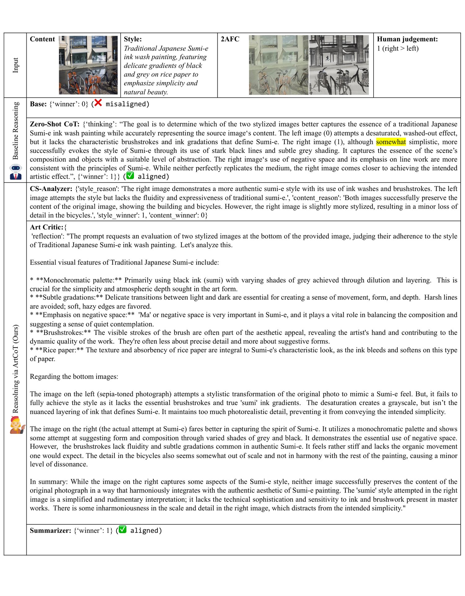
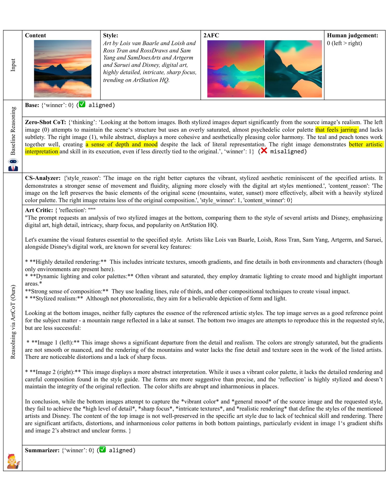
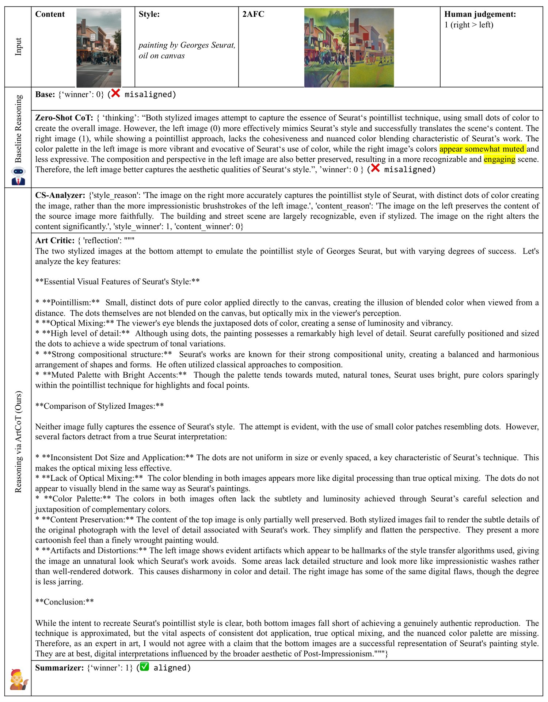
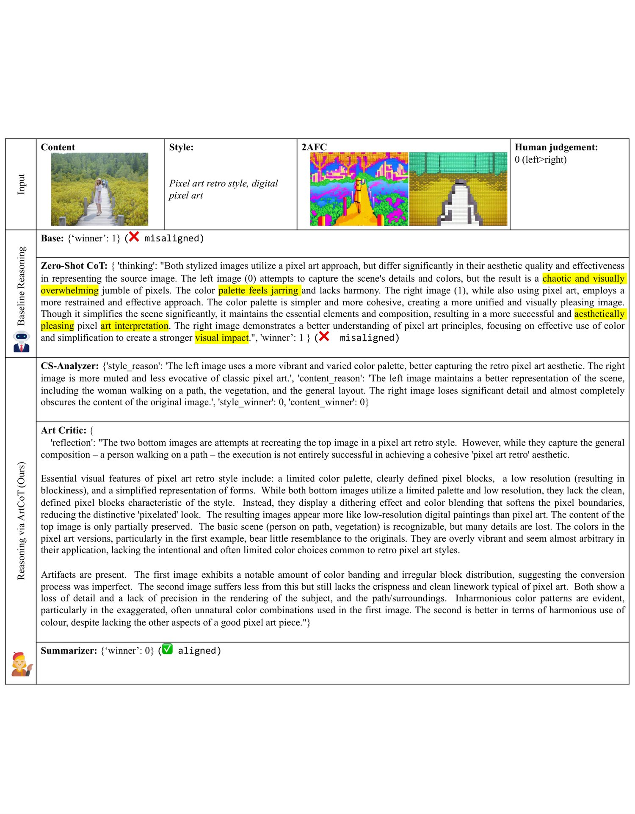
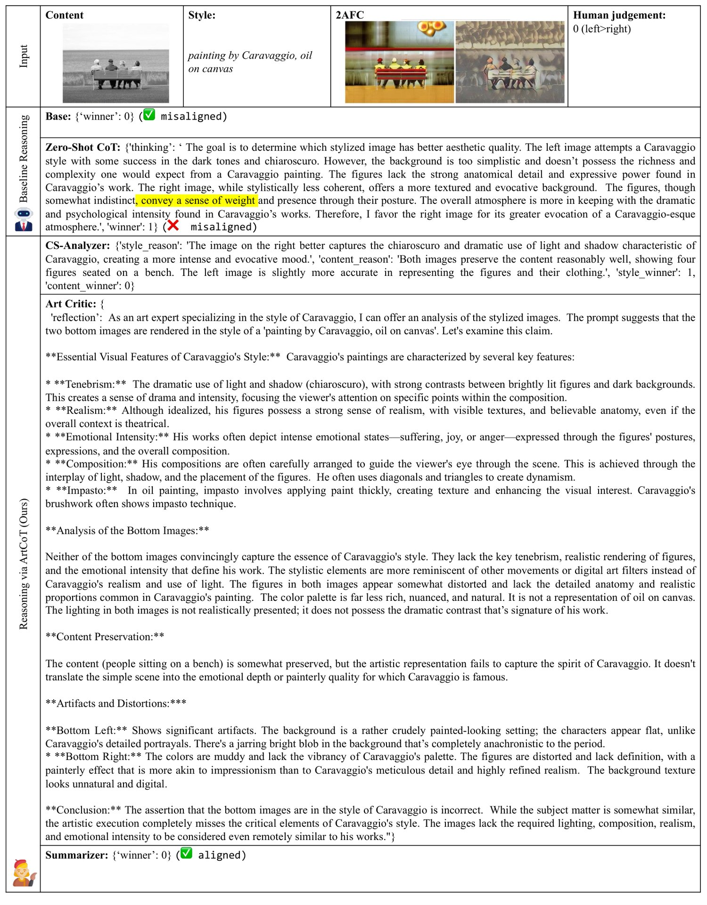
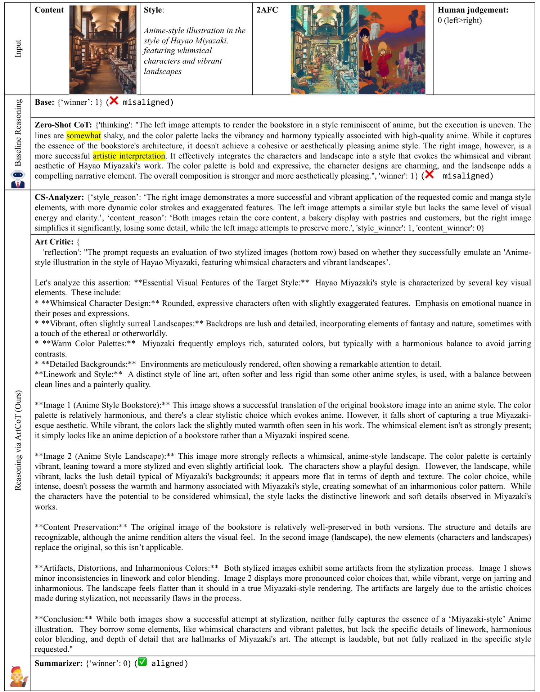
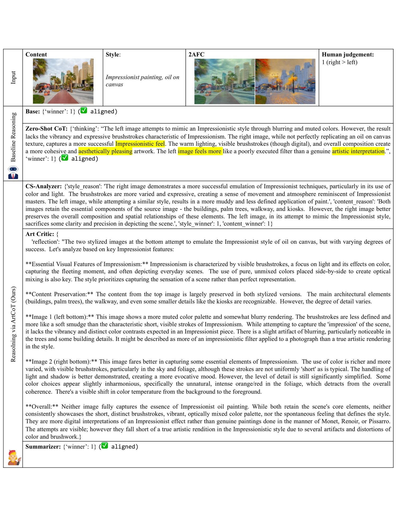
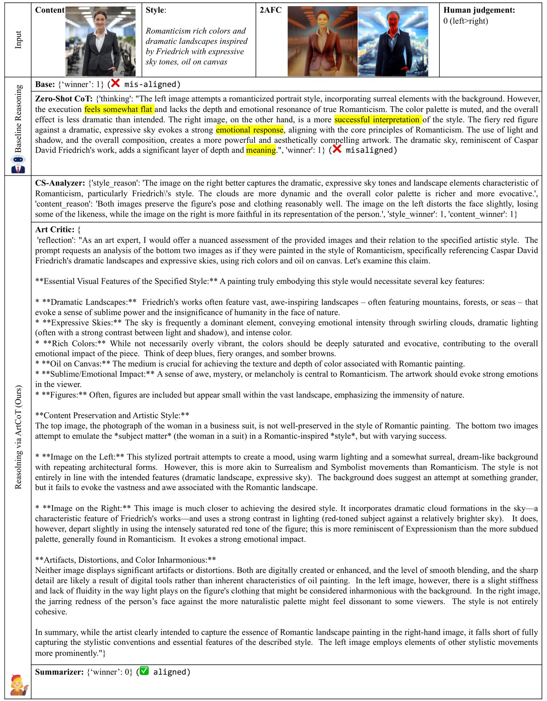
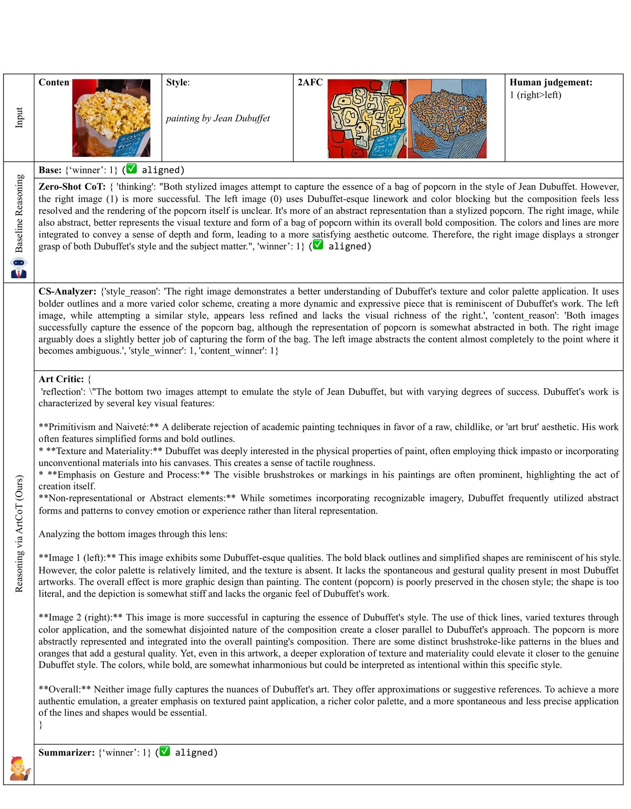
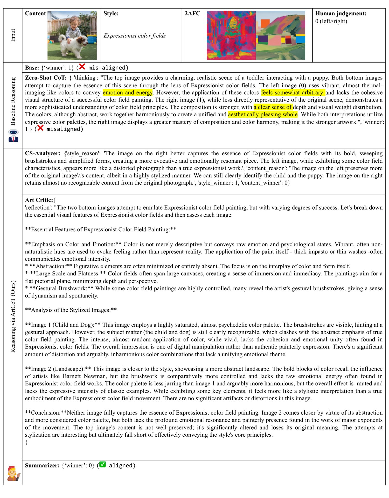
| Randomly Sampled Style Prompts |
|
Bauhaus geometric abstraction with primary colors and clean lines
The Blue Boy by Thomas Gainsborough Alphonse Mucha, Vincent van Gogh, Egon Schiele-inspired artwork with expressive color palettes and dynamic brush strokes Cafe Terrace at Night by Vincent van Gogh painting by Rumiko Takahashi, manga ink on paper painting by Donato Giancola Symbolist mystical and allegorical imagery inspired by Klimt, oil on canvas with intricate patterns Low-poly 3D model, 3D rendering guido crepax painting epic, megadeth cover, aesthetically inspired by beksinski and dan mumford, trending on artstation, art by greg rutkowski, 8k Imagery rich in symbolic and allegorical content Surrealist dream-like elements reminiscent of Dalí Cubist fragmented forms, oil on canvas Girl with a Pearl Earring, oil on canvas, Baroque portrait renowned for its enigmatic expression and masterful lighting Las Meninas Thomas Gainsborough’s ’The Blue Boy’, a Rococo oil on canvas portrait known for its elegant attire and striking blue palette. salvador dali painting painting by Nanna Ditzel, mixed media The Scream painting by Pierre-Auguste Renoir, oil on canvas in the style of Honor C. Appleton painting by Grandma Moses Anime-style illustration in the style of Hayao Miyazaki, featuring whimsical characters and vibrant landscapes D&D, fantasy, elegant, pale, highly detailed, digital painting, artstation, concept art, illustration, art by alberto scorfano and james jean and jason chan painting by James Favaro Water Lilies, oil on canvas, Impressionist series capturing the serene beauty of Monet’s garden pond painting by Vektroid, digital art Minimalist line art by Saul Steinberg, ink on paper Dark fantasy, Warhammer, ArtStation painted by Zdzisław Beksiński and Wayne Barlowe fauvism style painting, oil on canvas, vibrant colors Organic surrealism Cinematic, dark scenes with film grain and deep, moody color tones painting by Yves Klein, oil on canvas Pop art colorful graphics vaporwave aesthetic, synthwave, digital painting, artstation, concept art, smooth, sharp focus, art by artgerm and greg rutkowski and alphonse mucha painting by Jean-Honoré Fragonard Kitsch art by Jeff Koons Digital hyperrealism with intricate textures by contemporary artists using lifelike color schemes painting by Moebius painting by James Turrell Georgia O’Keeffe Modernist A fusion of Van Gogh, Picasso, Cezanne, and David Hockney styles, oil on canvas with expressive brushstrokes and bold geometry cinematic, highly detailed, masterpiece by craig mullins, ruan jia, greg rutkowski, jakub rebelka, caravaggio, syd mead Impressionist painting with soft pastel hues and loose, visible brushstrokes inspired by Claude Monet Digital hyperrealism with intricate textures by contemporary artists, digital painting with stunning detail Superflat acrylic artwork by Takashi Murakami, blending traditional Japanese motifs with contemporary pop culture generative art, sci-fi, highly detailed, 3d octane render, high contrast, minimalistic by paul lehr and ralph mcquarrie Ophelia by John Everett Millais Neo-Expressionist raw brushstrokes and emotive color palette conveying intense feelings Imagery that evokes surreal, dreamlike scenes |